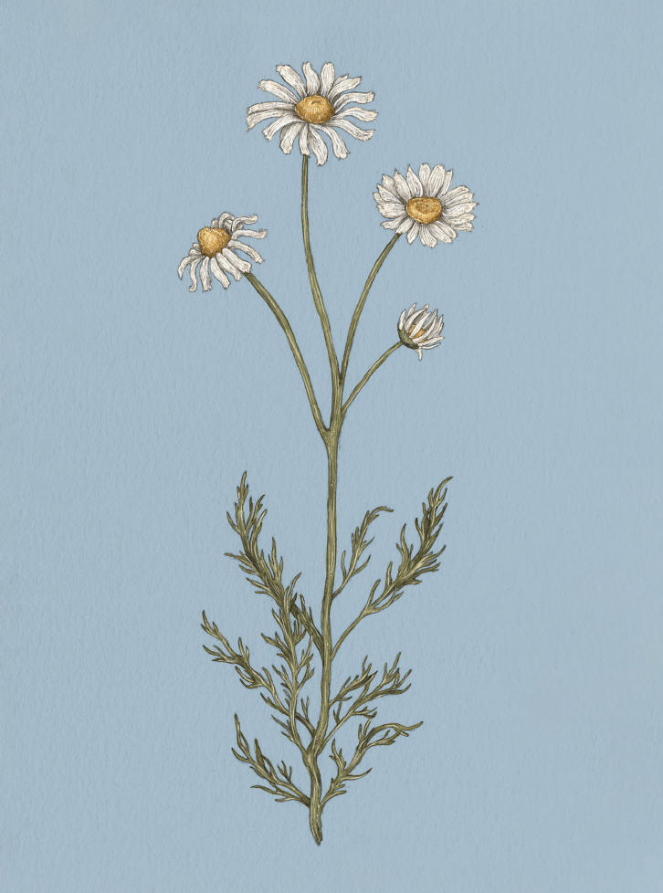

The Language of Flowers
Chamomile

Chamomile
Matrícaria
Meaning
Energy in adversity
Origin
Chamomile's meaning may come from its many healing properties, which were first recognized in ancient
Egypt. Brewed in tea, chamomile calms the nerves and promotes sleep, allowing the body and mind to
rest and renew during times of stress. Chamomile is said to produce the healing energy and prolonged
vigor needed to overcome adversity.
Pair With
- Dogwood to show that your love will overcome all obstacles
- Rose to indicate the strength of your love during a difficult time
- Nettle to show sympathy for unfair circumstances